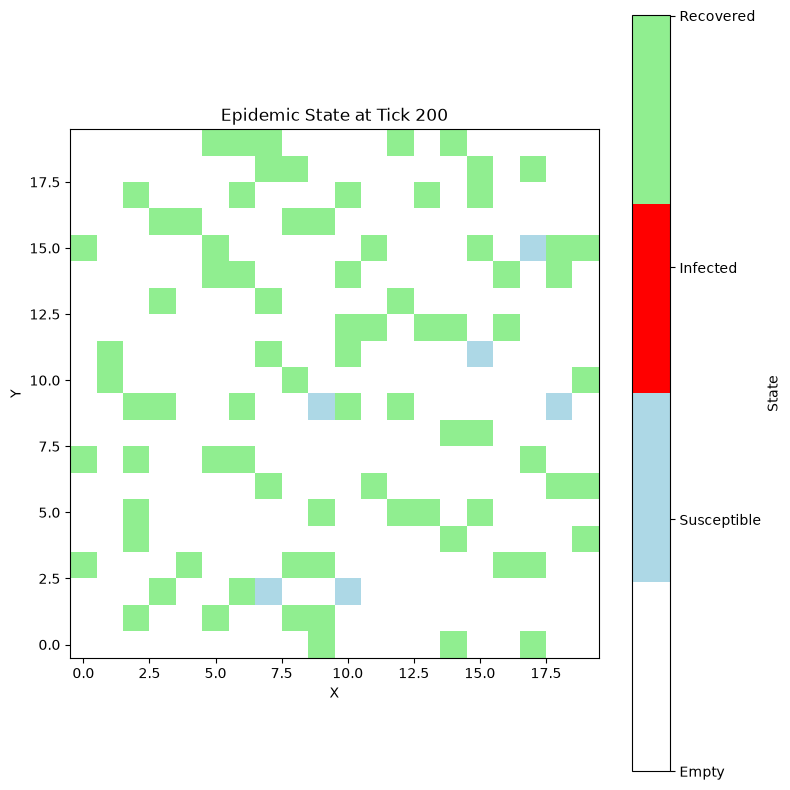
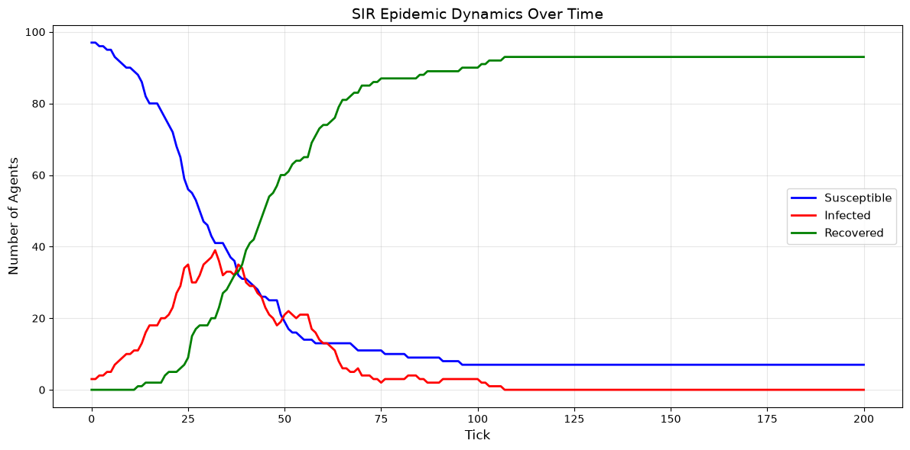

Hybrid ABM-DEVS Models with Modelly#
Tutorial Description#
This tutorial teaches you how to combine traditional tick-based agent-based modeling with discrete event simulation in a single Modelly model. You’ll learn when and how to use hybrid models: a step() method for the behavior that happens every time unit, plus scheduled events for everything that happens at specific moments.
Learning Objectives:
Understand when to use hybrid models vs pure step-based or pure event-driven models
Combine
step()withModel.schedule_event()Combine spatial agent movement with event scheduling
Implement an epidemic model with event-based recovery
Benchmark tick-based vs event-based recovery (and learn when events actually pay off)
Apply advanced event patterns (cancellation, chaining, dynamic scheduling)
Prerequisites:
Complete Tutorial 3 (Event Scheduling & Time) - REQUIRED
Complete Tutorial 11 (Discrete Event Simulation) - recommended
Complete Tutorial 4 (Adding Space) and Tutorial 5 (Collecting Data)
Understanding of spatial models and agent movement
What You’ll Build: A spatial SIR epidemic model where agents move on a grid each tick (ABM), but recoveries are handled as discrete events (DEVS), with performance comparisons and visualization.
Important:
If you are just exploring Modelly and want the fastest way to execute the code we recommend executing this tutorial online in a Colab notebook.

If you do not have a Google account you can use

If you are running locally, please ensure you have the latest Modelly version installed.
Tutorial Setup#
If running locally, ensure Modelly is installed:
pip install "modelly-abm[rec]"
For this tutorial, we’ll also use:
pip install numpy pandas matplotlib
Recap: Pure Event-Driven vs Hybrid Models#
In Tutorial 11, we built a pure discrete event simulation:
Float-based continuous time (0.0, 1.3, 2.7, 5.2, …)
Only scheduled events execute (we never overrode
step())Perfect for queuing systems, arrivals, service processes
Limitation: Nothing happens unless some event schedules it. There is no automatic activation of all agents.
When Do We Need Hybrid Models?#
Sometimes we need both approaches:
Agents move/interact every tick (spatial dynamics)
But certain state changes happen at specific times (events)
Example: Epidemic spread
Movement: Every tick (agents walk around)
Recovery: Scheduled event (after random duration)
This is where combining step() with schedule_event() shines!
One Model, Both Styles#
In Modelly there is a single Model class. Its step() method is simply a recurring event that
fires once per time unit, so hybrid models need no special machinery:
Feature |
Pure event-driven |
Hybrid ( |
|---|---|---|
|
Not overridden (does nothing) |
Runs automatically every tick |
Time advance |
Jumps from event to event |
Ticks of 1.0, plus events at any time |
Use case |
Queuing, arrivals |
Spatial ABM + events |
Best for |
Sparse, irregular processes |
Regular behavior + occasional state changes |
Key Difference: with a step() method, Modelly calls it every tick and executes any
scheduled events in between.
import modelly
class HybridModel(modelly.Model):
def __init__(self):
super().__init__()
self.tick_count = 0
# Schedule an event at tick 5
self.schedule_event(self.scheduled_event, at=5)
def step(self):
# This runs EVERY tick automatically
self.tick_count += 1
print(f"Tick {self.tick_count} at time {self.time}")
def scheduled_event(self):
# This runs at scheduled time
print(f" Event executed at time {self.time}")
# Create and run for 10 ticks
model = HybridModel()
model.run_for(10)
Tick 1 at time 1.0
Tick 2 at time 2.0
Tick 3 at time 3.0
Tick 4 at time 4.0
Tick 5 at time 5.0
Event executed at time 5
Tick 6 at time 6.0
Tick 7 at time 7.0
Tick 8 at time 8.0
Tick 9 at time 9.0
Tick 10 at time 10.0
Scheduling Relative to the Current Tick#
Because step() is a recurring event with Priority.HIGH, you don’t need a special “next tick”
method. To do something one tick from now, just use after=:
self.schedule_event(self.do_something, after=1)
Notice in the example above that the event scheduled for time 5 ran after step() for tick 5:
events are ordered by time first and priority second, and a Priority.DEFAULT event comes
after the Priority.HIGH step.
# Import required libraries
import time as time_module
import matplotlib.pyplot as plt
import numpy as np
# Modelly imports
import modelly
from modelly.space import CellAgent, OrthogonalMooreGrid
Mathematical Foundations: The SIR Epidemic Model#
Before building our hybrid model, let’s understand the mathematics behind the SIR epidemic dynamics.
The SIR Model#
Divides population into three compartments:
S (Susceptible): Can be infected
I (Infected): Currently sick, can infect others
R (Recovered): Immune, cannot be infected again
State Transitions#
S → I → R
S to I: Contact with infected agent + transmission probability
I to R: After recovery time duration
Key Parameters#
Transmission Rate (β): Probability of infection per contact
Example: β = 0.1 means 10% chance per contact
Recovery Time: Duration of infection
Example: Uniform(10, 20) means recovery takes 10-20 ticks
Basic Reproduction Number (R₀): $$R_0 = \beta \times \text{contacts per tick} \times \text{avg recovery time}$$
R₀ > 1: Epidemic spreads
R₀ < 1: Epidemic dies out
R₀ = 1: Equilibrium
Our Model: On a 20x20 grid, agents move randomly, β=0.1, recovery_time ~ Uniform(10,20). An infected agent can infect susceptible agents in its own cell and in the 8 surrounding cells.
Why Hybrid ABM-DEVS for Epidemics?#
Tick-Based Approach (Traditional):
def step(self):
if self.infected:
self.recovery_countdown -= 1
if self.recovery_countdown == 0:
self.recover()
Check EVERY infected agent EVERY tick
Computational cost: O(N x T) where N=agents, T=ticks
Event-Based Approach (DEVS):
def infect(self):
recovery_time = self.random.randint(10, 20)
self.schedule_event(self.recover, after=recovery_time)
Schedule recovery once, execute automatically
Computational cost: O(E log E) where E=events
Savings: On 100-agent model with 10-tick recoveries over 200 ticks:
Tick-based: ~20,000 checks (100 agents x 200 ticks)
Event-based: ~100 events (one recovery per infection)
def calculate_sir_reproduction_number(beta, avg_contacts_per_tick, avg_recovery_time):
"""
Calculate R₀ for SIR model.
Parameters:
- beta: Transmission probability per contact
- avg_contacts_per_tick: Average neighbors contacted per tick
- avg_recovery_time: Average duration of infection
Returns:
- R₀: Basic reproduction number
"""
# Expected infections = transmission rate x contacts x infection duration
R0 = beta * avg_contacts_per_tick * avg_recovery_time
return R0
# Example calculation for our model
beta = 0.1
n_agents, width, height = 100, 20, 20
# An infected agent can infect agents in its own cell and in the 8 surrounding
# cells (9 cells in total). If agents are spread randomly over the grid, the
# expected number of other agents in those 9 cells is:
avg_contacts = (n_agents - 1) * 9 / (width * height)
avg_recovery = 15 # Uniform(10, 20) mean
R0 = calculate_sir_reproduction_number(beta, avg_contacts, avg_recovery)
print(f"Average contacts per tick: {avg_contacts:.2f}")
print(f"Basic Reproduction Number R₀: {R0:.2f}")
if R0 > 1:
print(
f"Epidemic will spread (each infected person infects {R0:.2f} others on average)"
)
elif R0 < 1:
print("Epidemic will die out")
else:
print("Epidemic at equilibrium")
Average contacts per tick: 2.23
Basic Reproduction Number R₀: 3.34
Epidemic will spread (each infected person infects 3.34 others on average)
Spatial Dynamics on Grid#
Our model adds spatial structure:
Agents move randomly on 20x20 grid each tick
Infection requires spatial proximity (same cell or an adjacent cell)
Movement spreads disease spatially
Grid neighborhoods:
Moore neighborhood: 8 adjacent cells (including diagonals)
Transmission happens when a susceptible agent is in the same cell as, or next to, an infected agent
This creates realistic epidemic spread patterns:
Clusters of infection
Wave-like propagation
Spatial heterogeneity
Implementation: Event-Based Epidemic Model#
We’ll build the model in stages:
Person agent with S/I/R states
Movement (tick-based)
Infection (tick-based) and recovery (event-based)
Model class that combines
step()andschedule_event()
class Person(CellAgent):
"""A person agent with SIR disease states."""
# State constants
SUSCEPTIBLE = 0
INFECTED = 1
RECOVERED = 2
def __init__(self, model, cell):
super().__init__(model)
self.cell = cell
self.state = Person.SUSCEPTIBLE
self.recovery_event = None # Track scheduled recovery
self.infection_time = None
self.recovery_time = None
@property
def susceptible(self):
return self.state == Person.SUSCEPTIBLE
@property
def infected(self):
return self.state == Person.INFECTED
@property
def recovered(self):
return self.state == Person.RECOVERED
def move(self):
"""Move to random neighboring cell (tick-based)."""
self.cell = self.cell.neighborhood.select_random_cell()
def infect(self):
"""Infect this agent and schedule recovery event."""
if self.state != Person.SUSCEPTIBLE:
return # Already infected or recovered
# Change state
self.state = Person.INFECTED
self.infection_time = self.model.time
# Schedule recovery event
recovery_delay = self.random.randint(10, 20)
self.recovery_event = self.model.schedule_event(
self.recover, after=recovery_delay
)
def recover(self):
"""Recover from infection (called by scheduled event)."""
self.state = Person.RECOVERED
self.recovery_time = self.model.time
self.recovery_event = None
Person Agent Explained#
Key Design Decisions:
States as constants:
SUSCEPTIBLE,INFECTED,RECOVEREDMore readable than magic numbers
Easy to add states (e.g., EXPOSED for SEIR)
recovery_event tracking: Store the event reference
Allows cancellation if needed (e.g., agent dies)
Can check if recovery is scheduled
infect() checks state: Prevents double-infection
Idempotent: safe to call multiple times
recovery_delay randomness: Uniform(10, 20)
Realistic: recovery time varies by individual
Could use other distributions (exponential, normal)
Timestamps: Track infection_time and recovery_time
Enables analysis of disease duration
Can compute statistics later
class EpidemicModel(modelly.Model):
"""Spatial SIR epidemic with hybrid tick-based movement and event-based recovery."""
def __init__(
self,
n_agents=100,
width=20,
height=20,
initial_infected=3,
transmission_prob=0.1,
collect_data=True,
rng=None,
):
super().__init__(rng=rng)
self.n_agents = n_agents
self.transmission_prob = transmission_prob
self.collect_data = collect_data
# Create grid
self.grid = OrthogonalMooreGrid((width, height), torus=True, random=self.random)
# Create agents in random cells
Person.create_agents(
self,
n_agents,
self.random.choices(self.grid.all_cells.cells, k=n_agents),
)
# Data collector
self.datacollector = modelly.DataCollector(
model_reporters={
"Susceptible": lambda m: m.count_state(Person.SUSCEPTIBLE),
"Infected": lambda m: m.count_state(Person.INFECTED),
"Recovered": lambda m: m.count_state(Person.RECOVERED),
}
)
# Infect the initial agents. Each infection schedules its own recovery
# event right away, so no extra setup step is needed.
for agent in self.random.sample(list(self.agents), initial_infected):
agent.infect()
# Collect initial state
if self.collect_data:
self.datacollector.collect(self)
def count_state(self, state):
"""Count agents in given state."""
return sum(1 for agent in self.agents if agent.state == state)
def step(self):
"""Execute one tick: movement and infection checks."""
# Move all agents
self.agents.shuffle_do("move")
# Check for new infections (select() gives us a snapshot, so agents
# infected during this tick start infecting others next tick)
for agent in self.agents.select(lambda a: a.infected):
# Agents in the same cell and in the 8 surrounding cells
contacts = list(agent.cell.agents) + list(agent.cell.neighborhood.agents)
for other in contacts:
if other.susceptible and self.random.random() < self.transmission_prob:
other.infect() # Schedules recovery event
# Collect data
if self.collect_data:
self.datacollector.collect(self)
Epidemic Model Explained#
Hybrid Architecture:
Tick-Based (in step()):
Agent movement: happens every tick
Infection transmission: checked every tick
Data collection: every tick
Event-Based (scheduled):
Recovery: scheduled once per infection
Automatic execution at the specified time
No manual tracking needed
Recovery events run after the
step()of the same tick (step()hasPriority.HIGH)
Why This Works:
Movement needs to happen regularly (spatial dynamics)
Recovery is sparse (once per infection, 10-20 ticks apart)
Events make recovery efficient
Data Collection:
DataCollectorworks seamlessly with scheduled eventsCalled every tick in
step()Tracks S/I/R compartment sizes over time
from matplotlib.colors import ListedColormap
def visualize_epidemic_state(model):
"""Visualize the current state of the epidemic on the grid."""
# -1 marks empty cells
grid_state = np.full(model.grid.dimensions, -1)
# Draw infected agents last so they stay visible when sharing a cell
for agent in sorted(model.agents, key=lambda a: a.infected):
x, y = agent.cell.coordinate
grid_state[x][y] = agent.state
# Create heatmap
plt.figure(figsize=(8, 8))
cmap = ListedColormap(["white", "lightblue", "red", "lightgreen"])
plt.imshow(
grid_state.T,
cmap=cmap,
vmin=-1,
vmax=2,
interpolation="nearest",
origin="lower",
)
cbar = plt.colorbar(ticks=[-1, 0, 1, 2], label="State")
cbar.ax.set_yticklabels(["Empty", "Susceptible", "Infected", "Recovered"])
plt.title(f"Epidemic State at Tick {model.time:.0f}")
plt.xlabel("X")
plt.ylabel("Y")
plt.tight_layout()
plt.show()
Running the Epidemic Simulation#
Let’s run the model and watch the epidemic spread!
Parameters:
100 agents on 20x20 grid
3 initially infected
Transmission probability: 10% per contact
Recovery time: Uniform(10, 20) ticks
Run for 200 ticks
# Create and run the model
model = EpidemicModel(
n_agents=100,
width=20,
height=20,
initial_infected=3,
transmission_prob=0.1,
rng=42,
)
# Run simulation
print("Running epidemic simulation...")
model.run_for(200)
print("\nSimulation complete!")
print(f"Final state at tick {model.time:.0f}:")
print(f" Susceptible: {model.count_state(Person.SUSCEPTIBLE)}")
print(f" Infected: {model.count_state(Person.INFECTED)}")
print(f" Recovered: {model.count_state(Person.RECOVERED)}")
Running epidemic simulation...
Simulation complete!
Final state at tick 200:
Susceptible: 7
Infected: 0
Recovered: 93
# Show final grid state
visualize_epidemic_state(model)

# Get data from datacollector
df = model.datacollector.get_model_vars_dataframe()
# Plot SIR curves
plt.figure(figsize=(12, 6))
plt.plot(df.index, df["Susceptible"], label="Susceptible", color="blue", linewidth=2)
plt.plot(df.index, df["Infected"], label="Infected", color="red", linewidth=2)
plt.plot(df.index, df["Recovered"], label="Recovered", color="green", linewidth=2)
plt.xlabel("Tick", fontsize=12)
plt.ylabel("Number of Agents", fontsize=12)
plt.title("SIR Epidemic Dynamics Over Time", fontsize=14)
plt.legend(fontsize=11)
plt.grid(True, alpha=0.3)
plt.tight_layout()
plt.show()
# Print peak statistics
peak_infected_idx = df["Infected"].idxmax()
peak_infected = df.loc[peak_infected_idx, "Infected"]
print(f"\nPeak infected: {peak_infected} agents at tick {peak_infected_idx}")

Peak infected: 39 agents at tick 32
Interpreting the Results#
Typical SIR Curve Shape:
Susceptible (blue): Starts high, decreases as epidemic spreads
Infected (red): Rises to peak, then declines
Recovered (green): Starts at zero, gradually increases
Key Observations:
Peak infection occurs when infection rate = recovery rate
Final epidemic size: Total recovered at end
Some susceptible agents may never get infected (lucky!)
Spatial Patterns:
Epidemic spreads in waves from initial infections
Clusters form due to spatial proximity
Random movement helps spread throughout grid
Performance Analysis: Tick-Based vs Event-Based#
Now let’s compare the computational efficiency of event-based recovery versus a purely tick-based approach.
Two Implementations:
Tick-Based: Check every agent every tick for recovery
Event-Based (our hybrid): Schedule recovery once, execute automatically
Hypothesis: Event-based should be a little faster, because it skips a per-agent check on every tick. But keep in mind that movement and infection checks happen every tick in both models, so they dominate the run time. Let’s measure rather than guess.
class PersonTickBased(CellAgent):
"""Person agent with tick-based recovery countdown."""
SUSCEPTIBLE = 0
INFECTED = 1
RECOVERED = 2
def __init__(self, model, cell):
super().__init__(model)
self.cell = cell
self.state = PersonTickBased.SUSCEPTIBLE
self.recovery_countdown = 0
@property
def susceptible(self):
return self.state == PersonTickBased.SUSCEPTIBLE
@property
def infected(self):
return self.state == PersonTickBased.INFECTED
@property
def recovered(self):
return self.state == PersonTickBased.RECOVERED
def move(self):
self.cell = self.cell.neighborhood.select_random_cell()
def infect(self):
if self.state != PersonTickBased.SUSCEPTIBLE:
return
self.state = PersonTickBased.INFECTED
self.recovery_countdown = self.random.randint(10, 20)
def tick_recovery(self):
"""Check and update recovery countdown (called every tick)."""
if self.infected:
self.recovery_countdown -= 1
if self.recovery_countdown <= 0:
self.state = PersonTickBased.RECOVERED
class EpidemicModelTickBased(modelly.Model):
"""Traditional tick-based epidemic model."""
def __init__(
self,
n_agents=100,
width=20,
height=20,
initial_infected=3,
transmission_prob=0.1,
rng=None,
):
super().__init__(rng=rng)
self.n_agents = n_agents
self.transmission_prob = transmission_prob
self.grid = OrthogonalMooreGrid((width, height), torus=True, random=self.random)
PersonTickBased.create_agents(
self,
n_agents,
self.random.choices(self.grid.all_cells.cells, k=n_agents),
)
for agent in self.random.sample(list(self.agents), initial_infected):
agent.infect()
def step(self):
# Move all agents
self.agents.shuffle_do("move")
# Check recoveries (EVERY agent EVERY tick!)
self.agents.do("tick_recovery")
# Check for infections
for agent in self.agents.select(lambda a: a.infected):
contacts = list(agent.cell.agents) + list(agent.cell.neighborhood.agents)
for other in contacts:
if other.susceptible and self.random.random() < self.transmission_prob:
other.infect()
def benchmark_model(
model_class, n_agents=100, grid_size=20, n_ticks=200, n_runs=5, **kwargs
):
"""Benchmark a model over multiple runs (same seeds for every model class)."""
times = []
for run in range(n_runs):
model = model_class(
n_agents=n_agents, width=grid_size, height=grid_size, rng=run, **kwargs
)
start = time_module.perf_counter()
model.run_for(n_ticks)
elapsed = time_module.perf_counter() - start
times.append(elapsed)
return np.mean(times), np.std(times)
# Run benchmarks. Data collection is switched off in the event-based model
# because the tick-based model does not collect data either.
print("Benchmarking (5 runs each, 200 ticks)...")
print()
tick_mean, tick_std = benchmark_model(EpidemicModelTickBased)
print("Tick-Based Model:")
print(f" Mean time: {tick_mean:.3f}s (±{tick_std:.3f}s)")
event_mean, event_std = benchmark_model(EpidemicModel, collect_data=False)
print("\nEvent-Based Model (Hybrid):")
print(f" Mean time: {event_mean:.3f}s (±{event_std:.3f}s)")
speedup = tick_mean / event_mean
print(
f"\nSpeedup: {speedup:.2f}x {'faster' if speedup > 1 else 'slower'} with event-based approach"
)
Benchmarking (5 runs each, 200 ticks)...
Tick-Based Model:
Mean time: 0.034s (±0.001s)
Event-Based Model (Hybrid):
Mean time: 0.031s (±0.000s)
Speedup: 1.09x faster with event-based approach
Performance Insights#
Why Event-Based Can Be More Efficient:
Sparse Events: Recovery events are rare compared to every-tick checks
No Redundant Checks: Don’t check susceptible/recovered agents
Event Queue Efficiency: O(log E) insertions vs O(N) checks every tick
Why the difference is small here:
Movement and infection checks happen every tick in both models, and they cost much more than the one cheap
if self.infectedcheck that events let us skipA smarter tick-based model would only loop over the infected agents, narrowing the gap even further
Event scheduling has its own overhead (creating
Eventobjects, heap operations)
When Event-Based Wins Bigger: the work you replace with an event must be a large part of the per-tick cost, for example when you would otherwise poll thousands of dormant agents every tick, when waiting times are long, or when the polled check is expensive.
Takeaway: Choose events when they make the model clearer (a recovery is naturally “something that happens at a time”) and measure before claiming a speedup.
Advanced DEVS Patterns#
Let’s explore advanced event scheduling patterns useful in real models.
Pattern 1: Event Cancellation#
Sometimes you need to cancel a scheduled event (e.g., an agent dies before recovering).
Implementation: Store the Event that schedule_event returns and call event.cancel().
class PersonWithMortality(Person):
"""Person who can die, canceling their recovery event."""
DEAD = 3 # New state
def die(self):
"""Agent dies, canceling any scheduled recovery."""
if self.recovery_event is not None:
# Cancel the recovery event
self.recovery_event.cancel()
self.recovery_event = None
self.state = PersonWithMortality.DEAD
print(f"Agent {self.unique_id} died at time {self.model.time}")
class MortalityDemo(modelly.Model):
"""A tiny model with one patient who dies before recovering."""
def __init__(self, rng=None):
super().__init__(rng=rng)
self.grid = OrthogonalMooreGrid((3, 3), torus=True, random=self.random)
self.patient = PersonWithMortality(self, self.grid.all_cells.cells[0])
self.patient.infect() # Schedules recovery
# Before recovery happens (10-20 ticks), the agent dies after 5
self.schedule_event(self.patient.die, after=5)
model_demo = MortalityDemo(rng=1)
model_demo.run_for(25)
print(f"Agent state: {model_demo.patient.state} (3 = DEAD)")
print(f"Recovery event: {model_demo.patient.recovery_event}")
Agent 1 died at time 5.0
Agent state: 3 (3 = DEAD)
Recovery event: None
Pattern 2: Event Chaining#
Schedule follow-up events from within an event handler.
class MultiStageProcess(modelly.Agent):
"""Agent with multi-stage process (e.g., Exposed → Infected → Recovered)."""
def __init__(self, model):
super().__init__(model)
self.stage = 0
def start_exposure(self):
"""Stage 1: Exposed."""
self.stage = 1
print(f"Time {self.model.time}: Agent exposed")
# Chain to infection after incubation period
incubation = self.random.randint(3, 7)
self.model.schedule_event(self.become_infected, after=incubation)
def become_infected(self):
"""Stage 2: Infected."""
self.stage = 2
print(f"Time {self.model.time}: Agent infected")
# Chain to recovery
illness_duration = self.random.randint(10, 15)
self.model.schedule_event(self.recover, after=illness_duration)
def recover(self):
"""Stage 3: Recovered."""
self.stage = 3
print(f"Time {self.model.time}: Agent recovered")
# Demo
model_chain = modelly.Model(rng=1)
agent_chain = MultiStageProcess(model_chain)
agent_chain.start_exposure()
model_chain.run_for(30)
Time 0.0: Agent exposed
Time 5.0: Agent infected
Time 18.0: Agent recovered
Pattern 3: Dynamic Event Scheduling#
Schedule events based on runtime conditions. For a fixed period, use
schedule_recurring(function, Schedule(interval=...)) (see Tutorial 3) instead. Here the delay
until the next event depends on what just happened, so each event schedules its successor.
class AdaptiveAgent(modelly.Agent):
"""Agent that adapts behavior based on conditions."""
def __init__(self, model):
super().__init__(model)
self.stress_level = 0
def check_environment(self):
"""Periodically check environment and adapt."""
# Simulate environmental check
danger_detected = self.random.random() < 0.3
if danger_detected:
self.stress_level += 1
print(f"Time {self.model.time}: Danger! Stress = {self.stress_level}")
# Check again sooner when stressed
next_check = self.random.randint(1, 3)
else:
self.stress_level = max(0, self.stress_level - 1)
print(f"Time {self.model.time}: Safe. Stress = {self.stress_level}")
# Check again later when calm
next_check = self.random.randint(5, 10)
# Schedule next check dynamically
self.model.schedule_event(self.check_environment, after=next_check)
# Demo
model_adaptive = modelly.Model(rng=1)
agent_adaptive = AdaptiveAgent(model_adaptive)
agent_adaptive.check_environment()
model_adaptive.run_for(50)
Time 0.0: Safe. Stress = 0
Time 8.0: Danger! Stress = 1
Time 10.0: Safe. Stress = 0
Time 17.0: Danger! Stress = 1
Time 19.0: Danger! Stress = 2
Time 21.0: Safe. Stress = 1
Time 27.0: Safe. Stress = 0
Time 32.0: Danger! Stress = 1
Time 34.0: Danger! Stress = 2
Time 36.0: Safe. Stress = 1
Time 45.0: Safe. Stress = 0
Real-World Extensions#
Here are ideas to extend this tutorial for real research:
Extension 1: SEIR Model#
Add an Exposed state between Susceptible and Infected:
def expose(self):
self.state = Person.EXPOSED
incubation = self.random.randint(3, 7)
self.model.schedule_event(self.become_infected, after=incubation)
def become_infected(self):
self.state = Person.INFECTED
# Schedule recovery as before
Research Value: Models diseases with incubation periods (COVID-19, influenza).
Extension 2: Intervention Strategies#
Model public health interventions:
Vaccination:
def vaccinate(self):
if self.susceptible:
self.state = Person.RECOVERED # Immune
Lockdown (reduce movement):
def step(self):
if self.model.lockdown:
if self.random.random() < 0.2: # 20% mobility
self.agents.shuffle_do("move")
else:
self.agents.shuffle_do("move")
Contact Tracing:
def recover(self):
# Trace and quarantine contacts
for contact in self.recent_contacts:
if contact.exposed:
contact.quarantine()
Extension 3: Heterogeneous Populations#
Model different risk groups:
class Person(modelly.Agent):
def __init__(self, model, age_group):
super().__init__(model)
self.age_group = age_group
# Age-specific parameters
if age_group == "elderly":
self.transmission_prob = 0.15 # More susceptible
self.recovery_time = (15, 30) # Longer recovery
elif age_group == "adult":
self.transmission_prob = 0.10
self.recovery_time = (10, 20)
else: # child
self.transmission_prob = 0.08
self.recovery_time = (5, 10)
Extension 4: Network-Based Transmission#
Use a Network space instead of a grid:
import networkx as nx
from modelly.space import CellAgent, Network
# Create social network
G = nx.watts_strogatz_graph(n=100, k=6, p=0.1)
self.grid = Network(G, random=self.random)
# Transmission over network edges (agents live on cells = nodes)
def step(self):
for agent in self.agents.select(lambda a: a.infected):
for neighbor in agent.cell.neighborhood.agents:
if neighbor.susceptible and self.random.random() < self.transmission_prob:
neighbor.infect()
Research Value: Models social network effects on disease spread.
Extension 5: Data-Driven Calibration#
Calibrate model to real epidemic data:
from scipy.optimize import minimize
def simulate_with_params(beta, recovery_mean):
"""Run simulation with given parameters."""
model = EpidemicModel(transmission_prob=beta)
model.run_for(200)
return model.datacollector.get_model_vars_dataframe()
def objective(params):
"""Minimize difference between simulation and real data."""
beta, recovery_mean = params
sim_data = simulate_with_params(beta, recovery_mean)
# Compare to real_data
error = np.sum((sim_data['Infected'] - real_data['Infected'])**2)
return error
# Optimize
result = minimize(objective, x0=[0.1, 15], bounds=[(0.01, 0.5), (5, 30)])
best_beta, best_recovery = result.x
Detailed Performance Analysis#
Now let’s run a more detailed benchmark, first on the small grid we used above and then on a larger model.
def benchmark_detailed(n_agents=100, grid_size=20, n_ticks=200, n_runs=5):
"""Detailed benchmark comparing both approaches."""
print(
f"Benchmarking: {n_agents} agents, {grid_size}x{grid_size} grid, {n_ticks} ticks, {n_runs} runs"
)
print("=" * 70)
tick_mean, tick_std = benchmark_model(
EpidemicModelTickBased,
n_agents=n_agents,
grid_size=grid_size,
n_ticks=n_ticks,
n_runs=n_runs,
)
event_mean, event_std = benchmark_model(
EpidemicModel,
n_agents=n_agents,
grid_size=grid_size,
n_ticks=n_ticks,
n_runs=n_runs,
collect_data=False,
)
print(f"\nTick-Based: {tick_mean:.3f}s (±{tick_std:.3f}s)")
print(f"Event-Based: {event_mean:.3f}s (±{event_std:.3f}s)")
print(f"Speedup: {tick_mean / event_mean:.2f}x\n")
return tick_mean, event_mean
# Small grid
print("\n### SMALL GRID ###")
small_tick, small_event = benchmark_detailed(n_agents=100, grid_size=20, n_ticks=200)
### SMALL GRID ###
Benchmarking: 100 agents, 20x20 grid, 200 ticks, 5 runs
======================================================================
Tick-Based: 0.033s (±0.000s)
Event-Based: 0.031s (±0.000s)
Speedup: 1.05x
Larger Model Comparison#
Does the picture change with a larger model? Let’s test with:
500 agents (5x more)
50x50 grid (6.25x larger)
200 ticks
Run it and compare with the small grid. Results depend on your machine and on how many agents are infected at any time, so use the numbers as a rough guide only.
# Large grid benchmark
print("\n### LARGE GRID ###")
large_tick, large_event = benchmark_detailed(
n_agents=500, grid_size=50, n_ticks=200, n_runs=3
)
# Comparison
print("\n" + "=" * 70)
print("SUMMARY")
print("=" * 70)
print(f"Small grid speedup: {small_tick / small_event:.2f}x")
print(f"Large grid speedup: {large_tick / large_event:.2f}x")
### LARGE GRID ###
Benchmarking: 500 agents, 50x50 grid, 200 ticks, 3 runs
======================================================================
Tick-Based: 0.175s (±0.026s)
Event-Based: 0.149s (±0.002s)
Speedup: 1.18x
======================================================================
SUMMARY
======================================================================
Small grid speedup: 1.05x
Large grid speedup: 1.18x
Profiling with cProfile#
For deeper performance analysis, we can use Python’s built-in profiler.
import cProfile
import pstats
from io import StringIO
def profile_model(model_type="event", n_agents=200, grid_size=30, n_ticks=100):
"""Profile a model run."""
profiler = cProfile.Profile()
profiler.enable()
if model_type == "event":
model = EpidemicModel(
n_agents=n_agents,
width=grid_size,
height=grid_size,
collect_data=False,
rng=0,
)
else:
model = EpidemicModelTickBased(
n_agents=n_agents, width=grid_size, height=grid_size, rng=0
)
model.run_for(n_ticks)
profiler.disable()
# Print stats
s = StringIO()
stats = pstats.Stats(profiler, stream=s)
stats.strip_dirs()
stats.sort_stats("cumulative")
stats.print_stats(10) # Top 10 functions
print(f"\n{'=' * 70}")
print(f"{model_type.upper()} MODEL PROFILING")
print(f"{'=' * 70}")
print(s.getvalue())
# Profile both
profile_model("tick")
profile_model("event")
======================================================================
TICK MODEL PROFILING
======================================================================
278165 function calls (278164 primitive calls) in 0.098 seconds
Ordered by: cumulative time
List reduced from 147 to 10 due to restriction <10>
ncalls tottime percall cumtime percall filename:lineno(function)
1 0.000 0.000 0.094 0.094 emitters.py:256(wrapper)
1 0.000 0.000 0.094 0.094 schedule.py:128(run_for)
1 0.000 0.000 0.094 0.094 schedule.py:31(_advance_time)
100 0.000 0.000 0.094 0.001 event.py:115(execute)
100 0.000 0.000 0.093 0.001 generator.py:128(_execute_and_reschedule)
100 0.006 0.000 0.092 0.001 699530092.py:69(step)
200 0.009 0.000 0.071 0.000 {built-in method modelly._native.fastloop.call_each}
100 0.000 0.000 0.062 0.001 strong.py:127(shuffle_do)
20000 0.021 0.000 0.057 0.000 699530092.py:26(move)
21928 0.006 0.000 0.015 0.000 neighborhood.py:32(neighborhood)
======================================================================
EVENT MODEL PROFILING
======================================================================
245378 function calls (245376 primitive calls) in 0.095 seconds
Ordered by: cumulative time
List reduced from 267 to 10 due to restriction <10>
ncalls tottime percall cumtime percall filename:lineno(function)
2/1 0.000 0.000 0.090 0.090 emitters.py:256(wrapper)
1 0.000 0.000 0.090 0.090 schedule.py:128(run_for)
237 0.000 0.000 0.087 0.000 event.py:115(execute)
100 0.000 0.000 0.087 0.001 generator.py:128(_execute_and_reschedule)
1 0.000 0.000 0.086 0.086 schedule.py:31(_advance_time)
100 0.006 0.000 0.085 0.001 615830908.py:51(step)
100 0.000 0.000 0.063 0.001 strong.py:127(shuffle_do)
100 0.005 0.000 0.062 0.001 {built-in method modelly._native.fastloop.call_each}
20000 0.022 0.000 0.057 0.000 1638937359.py:29(move)
22052 0.006 0.000 0.015 0.000 neighborhood.py:32(neighborhood)
Challenging Exercises#
Now that you’ve mastered hybrid ABM-DEVS modeling, try these advanced exercises!
Exercise 1: SEIR Model#
Extend the SIR model to SEIR by adding an Exposed state.
Requirements:
Add
EXPOSEDstate (between Susceptible and Infected)When exposed, schedule infection after incubation period (3-7 ticks)
Exposed agents are NOT contagious
Update visualization to show 4 states
Track epidemic curve for all 4 compartments
Starter Code:
class PersonSEIR(Person):
EXPOSED = 3 # new state (0-2 are used by Person)
def expose(self):
if self.state != Person.SUSCEPTIBLE:
return
self.state = PersonSEIR.EXPOSED
self.exposure_time = self.model.time
# TODO: Schedule infection after incubation
incubation = self.random.randint(3, 7)
# YOUR CODE HERE
def become_infected(self):
# TODO: Transition from EXPOSED to INFECTED
# YOUR CODE HERE
pass
Exercise 2: Vaccination Campaign#
Implement a vaccination campaign starting at tick 50.
Requirements:
20% of susceptible agents get vaccinated each tick
Vaccinated agents go directly to
RECOVERED(immune)Stop vaccination when 70% are immune (recovered + vaccinated)
Compare epidemic curves: with vs without vaccination
Measure “lives saved” (infections prevented)
Hints:
def vaccinate_population(self):
if self.time >= 50 and self.time < self.vaccination_end:
susceptible = [a for a in self.agents if a.susceptible]
to_vaccinate = int(len(susceptible) * 0.2)
# YOUR CODE HERE
Challenge: Find the optimal vaccination rate to minimize total infections while vaccinating fewest people.
Exercise 3: Dynamic Behavioral Response#
Agents adapt their behavior based on local epidemic severity.
Requirements:
Agents track infected neighbors in Moore neighborhood
If >3 infected neighbors: reduce movement (move with 30% probability)
If >5 infected neighbors: “self-isolate” (don’t move at all)
Isolation lasts for 10 ticks, then re-evaluate
Compare: adaptive vs non-adaptive populations
Key Concepts:
Dynamic event scheduling (reschedule checks every N ticks)
Behavioral change based on local information
Feedback loops in epidemic dynamics
Starter Code:
def assess_risk(self):
neighbors = self.model.grid.get_neighbors(
self.pos, moore=True, include_center=False
)
infected_count = sum(1 for n in neighbors if n.infected)
if infected_count > 5:
self.isolating = True
# Schedule re-assessment in 10 ticks
elif infected_count > 3:
self.cautious = True
# YOUR CODE HERE
Exercise 4: Healthcare Capacity Modeling#
Model hospital capacity and differential outcomes.
Requirements:
Hospital has limited beds (20% of population)
Infected agents “request” hospital bed
Agents WITH beds: faster recovery (10-15 ticks)
Agents WITHOUT beds: slower recovery (15-25 ticks) + mortality risk
Mortality rate: 5% for untreated, 0.5% for treated
Track bed occupancy over time
Implement “flatten the curve” interventions
Advanced Challenges:
Beds freed when agents recover/die
Priority queue (sickest patients first)
Multiple hospitals with geographic constraints
This exercise combines:
Resource management
Multiple event types
Agent mortality (event cancellation)
Spatial resource allocation
Summary#
In this tutorial, you learned:
Key Concepts#
Hybrid ABM-DEVS: Combining tick-based (
step()) and event-based (schedule_event()) behavior in one modelOne Model class:
step()is just a recurring event; scheduled events run between and alongside stepsEvent Scheduling: Absolute (
at=) and relative (after=) scheduling, plusevent.cancel()Performance: Event-based recovery vs tick-based countdown, and why the gain can be small
Advanced Patterns: Cancellation, chaining, dynamic scheduling
Practical Skills#
Built a spatial SIR epidemic model
Compared performance of different approaches
Visualized epidemic dynamics
Applied event scheduling to real-world modeling scenarios
When to Use Hybrid ABM-DEVS#
Use Hybrid Models When:
Regular tick-based behavior (movement, sensing)
Plus sparse events (arrivals, state changes, completions)
Events occur at irregular intervals
The event formulation makes the model clearer, or replaces expensive polling
Examples:
Epidemics (movement + recovery events)
Traffic (regular flow + incidents)
Wildlife (movement + reproduction/death events)
Economics (market activity + policy interventions)
Next Steps#
Explore More Modelly Features:
Batch Runs: Compare intervention strategies with
modelly.run_batchVisualization: Interactive Solara visualizations (Tutorials 6-10)
Network Models: Use a
Networkspace for social networksContinuous Space: Use continuous space for finer movement
Deepen Your Event Knowledge:
Read the
modelly.timemodule source (modelly/time/events.py)Read about Priority Queues and Event Lists
Explore classical DEVS literature
Build Your Own Models:
Implement SEIR/SEIRD epidemic variants
Model intervention strategies (vaccination, lockdowns)
Calibrate to real-world data
Publish your research!